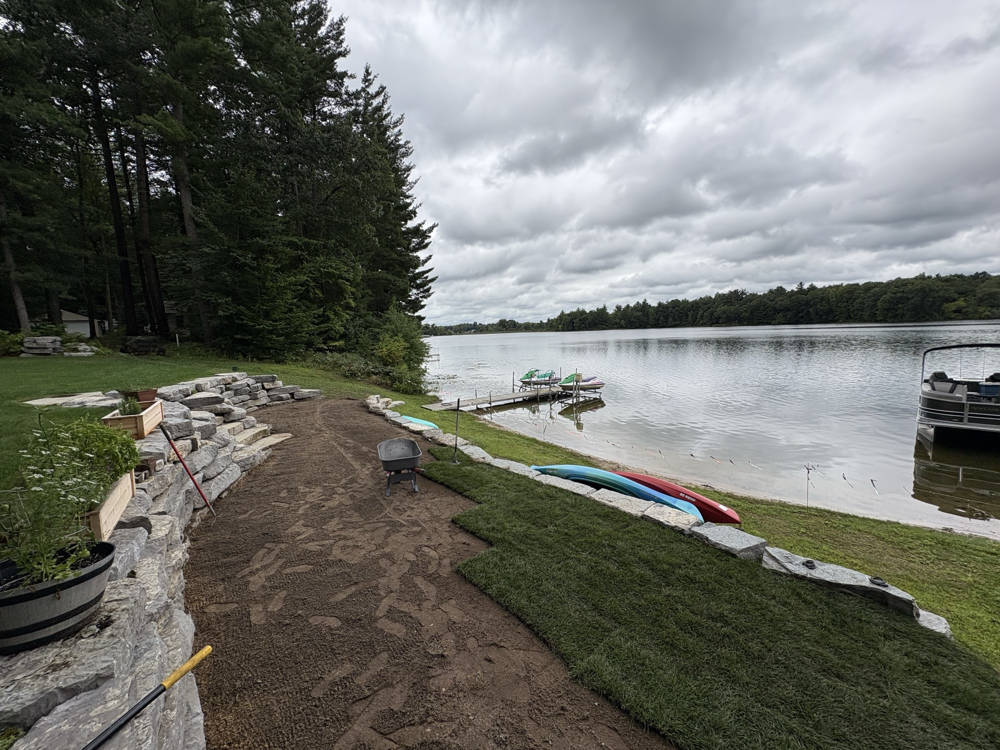

If you've got soggy spots, puddles that linger for days, or water creeping toward your foundation, you've probably wondered whether grading can fix the standing water in your yard. In most cases, the answer is yes — regrading to slope water away from your home is the single most common and effective drainage fix we install. Here's how it works.
Standing water almost always comes down to one thing: the ground isn't sloped to move water away. Maybe the yard was never graded properly, maybe soil has settled over time, or maybe the land naturally drains toward a low spot. Whatever the cause, water follows gravity — and if the grading sends it nowhere, it pools.
Yard grading reshapes the soil so the surface slopes away from your house and toward a place water can safely go. The general rule is a fall of about six inches over the first ten feet from your foundation. We move and compact soil to create that consistent slope, eliminating the low spots where water collects.
Most standing-water problems aren't a mystery — the yard is simply sloped wrong. Fix the grade, and the water has somewhere to go.
Grading solves the majority of standing-water issues on its own. For tougher cases — heavy clay soil, a yard that's lower than its surroundings, or water coming off a roof — we pair regrading with drainage solutions like a French drain, a dry well, downspout extensions or a catch basin. Together, proper grading and drainage move water off your property for good.
Beyond the soggy lawn and the mosquitoes, standing water near your foundation is a real risk — it can lead to a wet basement, foundation problems and dead grass. Correcting the grading and drainage protects both your landscape and your home.
Tired of standing water in your yard? North Shade Lawn handles grading and drainage across Greenville, Edmore, Carson City and mid-Michigan. Tell us where the water sits and we'll walk your property and lay out a fix.
Call or text for a free estimate — we serve Greenville, Edmore, Carson City & the surrounding area.